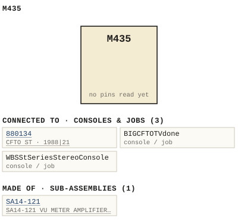

M435
| Type | module |
| Category | METER |
| Try it | simulator & front panel · download package (zip) |
| Earliest dated evidence | 1994|27 — manual issue date |
| Evidence | "MANUAL ISSUE# April 1994" in PUBLIC/Manuals + tech DOCUMENTS/METERING/-M435---M436---VU-Meter/M435-436 - P001 - Title Page.jpg |
| Confidence | high |
| All years found | 1994|27 |
| Used in jobs | 880134 (1988|21), BIGCFTOTVdone, WBSStSeriesStereoConsole |
| Folder | Modules/METER/M435 |
| Folder | PHOTOS/Drawings |
Connections and circuit (ideal SPICE model)
Inputs, outputs, power and control as its own documents name them (no RTO-144 sheet for it: pin numbers only where the page gives them). Run the generator, turn the gain, watch the VU.
Pictures


M435.connections.svg 1994 - M435 - 436 - P001 - Title Page.jpg
1994 - M435 - 436 - P001 - Title Page.jpg 1994 - M435 - 14-121-02-001 - METER AMPLIFIER SCHEMATIC.jpg
1994 - M435 - 14-121-02-001 - METER AMPLIFIER SCHEMATIC.jpg 1994 - M435 - 14-121-06-001 - METER AMPLIFIER COMPONENT.jpg
1994 - M435 - 14-121-06-001 - METER AMPLIFIER COMPONENT.jpg 1994 - M435 - 436 - P002 - 1-1.jpg
1994 - M435 - 436 - P002 - 1-1.jpg 1994 - M435 - 436 - P003 - 2-1.jpg
1994 - M435 - 436 - P003 - 2-1.jpg 1994 - M435 - 436 - P004 - 3-1.jpg
1994 - M435 - 436 - P004 - 3-1.jpg 1994 - M435 - 436 - P005 - 3-2.jpg
1994 - M435 - 436 - P005 - 3-2.jpg 1994 - M435 - 436 - P006 - 3-3.jpg
1994 - M435 - 436 - P006 - 3-3.jpg 1994 - M435 - 436 - P007 - 4-1.jpg
1994 - M435 - 436 - P007 - 4-1.jpg 1994 - M435 - 436 - P008 - 4-2.jpg
1994 - M435 - 436 - P008 - 4-2.jpg 1994 - M435 - 436 - P009 - 5-1.jpg
1994 - M435 - 436 - P009 - 5-1.jpg 1994 - M435 - 436 - P010 - 6-1.jpg
1994 - M435 - 436 - P010 - 6-1.jpg 1994 - M435 - 436 - P011 - 6-2.jpg
1994 - M435 - 436 - P011 - 6-2.jpg 1994 - M435 - 436 - P012 - 7-1.jpg
1994 - M435 - 436 - P012 - 7-1.jpg 1994 - M435 - 436 - P013 - 7-2.jpg
1994 - M435 - 436 - P013 - 7-2.jpg 19xx - 14-121-02-001.jpg
19xx - 14-121-02-001.jpg M435-436 - P005 - 3-2(1).jpg
M435-436 - P005 - 3-2(1).jpg M435-436 - P005 - 3-2.jpg
M435-436 - P005 - 3-2.jpg MP1-MP2-MP3-MP4 - P030 - M435-436 - 3-1.jpg
MP1-MP2-MP3-MP4 - P030 - M435-436 - 3-1.jpg 19xx - 14-121-02-001 - SA14-121 VU METER AMPLIFIER SCHEMATIC - ISS 5.jpg
19xx - 14-121-02-001 - SA14-121 VU METER AMPLIFIER SCHEMATIC - ISS 5.jpg 1988 - 880134 - 3642-02-005 - DENTICAL PLIED UTILITY RIGHT.jpg
1988 - 880134 - 3642-02-005 - DENTICAL PLIED UTILITY RIGHT.jpg L1202A - P37 - Input Channel Schematic.jpg
L1202A - P37 - Input Channel Schematic.jpg 1988 - 3642-02-005 - AUX CHANNEL SCHEMATIC - DRN DS - ISS 4.jpg
1988 - 3642-02-005 - AUX CHANNEL SCHEMATIC - DRN DS - ISS 4.jpg 1988 - 3642-02-006 - METER SCHEMATIC - DRN DS - ISS 3.jpg
1988 - 3642-02-006 - METER SCHEMATIC - DRN DS - ISS 3.jpg 1992 - MP1 - 8100-02-001 - AC-DC ADAPTER LAYOUT SHOWN FOR PREH CONNECTOR.jpg
1992 - MP1 - 8100-02-001 - AC-DC ADAPTER LAYOUT SHOWN FOR PREH CONNECTOR.jpg 1992 - MP1 - MP2-MP3-MP4 - P002.jpg
1992 - MP1 - MP2-MP3-MP4 - P002.jpg 1992 - MP1 - MP2-MP3-MP4 - P006 - 3-1.jpg
1992 - MP1 - MP2-MP3-MP4 - P006 - 3-1.jpg 1992 - MP1 - MP2-MP3-MP4 - P027 - M435-436.jpg
1992 - MP1 - MP2-MP3-MP4 - P027 - M435-436.jpg 1992 - MP1 - MP2-MP3-MP4 - P028 - M435-436 - 1-1.jpg
1992 - MP1 - MP2-MP3-MP4 - P028 - M435-436 - 1-1.jpg 1992 - MP1 - MP2-MP3-MP4 - P029 - M435-436 - 2-1.jpg
1992 - MP1 - MP2-MP3-MP4 - P029 - M435-436 - 2-1.jpg 1992 - MP1 - MP2-MP3-MP4 - P030 - M435-436 - 3-1.jpg
1992 - MP1 - MP2-MP3-MP4 - P030 - M435-436 - 3-1.jpg 1992 - MP1 - MP2-MP3-MP4 - P031 - M435-436 - 4-1.jpg
1992 - MP1 - MP2-MP3-MP4 - P031 - M435-436 - 4-1.jpg 1992 - MP1 - MP2-MP3-MP4 - P032 - M435-436 - 5-1.jpg
1992 - MP1 - MP2-MP3-MP4 - P032 - M435-436 - 5-1.jpg 1992 - MP1 - MP2-MP3-MP4 - P034 - M435-436 - 6-1.jpg
1992 - MP1 - MP2-MP3-MP4 - P034 - M435-436 - 6-1.jpg 1992 - MP1 - MP2-MP3-MP4 - P035 - M435-436 - 6-2.jpg
1992 - MP1 - MP2-MP3-MP4 - P035 - M435-436 - 6-2.jpgPrice history
| Year | Kind | Price | Listed as | Effective | Source |
|---|---|---|---|---|---|
| 2005|38 | used market value | 25.00 | M435 VU Meter | wbsps - website ARCHIVE/WBSPS 2008/ARCHIVE/old website/PriceGuide.htm | |
| 2006|39 | used market value | 25.00 | M435 VU Meter | wbsps - website ARCHIVE/WBSPS 2008/ARCHIVE/jan 2006 shell/priceguide.htm |
Pinout & connections
Dates found in the documents
| Year | Kind | Text | File |
|---|---|---|---|
| 1994|27 | manual issue date | MANUAL ISSUE# April 1994 |
1994 - M435 - 436 - P001 - Title Page.jpg |
| 1994|27 | month & year | April 1994 |
1994 - M435 - 436 - VU Meter (2).pdf |
Physical manual inventory
| Item | Location | Status | Scanned |
|---|---|---|---|
| M435-436 - VU Meter | PDF - Already scanned | ||
| VU METER | LOOSE BOX |
Documents (2)
| Year | File | |
|---|---|---|
| 1994|27 | 1994 - M435 - 436 - VU Meter (2).pdf | note |
| 1994|27 | 1994 - M435 - 436 - VU Meter.pdf | note |
Photos & scans (20)


Sub-assemblies & parts used (1)
| Item | What | Family | Year | How we know |
|---|---|---|---|---|
| SA14-121 | SA14-121 VU METER AMPLIFIER / SCHEMATIC | Circuit boards (SA14-nnn) | drawing filed with it |
Consoles & jobs it is connected to (3)
Their own drawings name this module.
| Job | Year | Drawing | Page |
|---|---|---|---|
| 880134 | 1988|21 | 1988 - 880134 - 3642-02-005 - DENTICAL PLIED UTILITY RIGHT.jpg | 1 |
| BIGCFTOTVdone | 1988 - BIG CFTO TV done - 3642-02-005 - DENTICAL PLIED UTILITY RIGHT.jpg | 1 | |
| WBSStSeriesStereoConsole | 1985 - ST - ward beck systems st console installation.pdf | 14 |

Named in other drawings & documents (23)
From the manuals
Each manual split into its sections. Text that is the same in many Ward-Beck manuals (warranty, address, standard notes) is kept once on the Boilerplate page and linked.
General description (1)
Description — 340 words · 1994 - M435 - 436 - P008 - 4-2.jpg, page 1
M435 M436 vu METER SA14-121 AMPL IF IER_ASSEMBLY 4[Ox)-SO=i5"-4ts 3 16 7t dropping resistor R28 included on the SA14-121 assembly limit meter lamp curren An dditional oop through connector P2 has been provided for the lamp power This incorporated make the vu meter assembly modular (no direct wiring) , with improved service- ability . The vu meter lamps lug into pins and while the meter power connects pins and 10 .
Typically WBS console system the power for the 5A14-121 amplifier taken from the positive side the bipolar 1 -25 volt supply . The meter Tamps are driven from the negative supply voltage. This maintain an equalized Ioad on the bipolar power suppiy . C0i ` = 1 "2 t_d|x_ :v | €noe Tt. aor = 0 '^= abem A0 0 "AuO"r) 4'U 09'|0r4 SpsT?y 3"1C {GqUZ Tsn 7o #n | 2 'F 1012/23- 6!
'Cn^ TUU0 .6- 07- " Yd Jer" "i"@ 3' | wftnamg 4671 = ] ' _ - 97 2m701 9;U niq 04 / (Jd6 es.0 #eb0 - Icque V2A 373 Arit GSF Bnb 0( = 8FU | | Jm i 2 ` | (. 03 KEl"7 19 CuoR Jaiuc '6ni < 1r.7atn= 47 ; 29o3i6m 77;=_ MI ' "' Ore ( 2i7 | CiA 70'< PcAdon 701*07o9m| _iotn #nEC9am 2'7T 7 * |` (ib5+4m 271*2 1818 70 ; $ti Uv A7J € !'[=m 077 9Juzn1 472 nU 378") "oftilona O7 / Ti3a ~30n0L - Uv 2169036 42 # "i30 JUGWc Jut nri Mts bengiasb I6=' 3Jai 0 # ] 4'" 50 44 "h [ (i0:- 37/1090 "41 J01 2 .7 [ baL aA[9 17 Yidma22n 7imemd I5T-41n2 P4] Nj)| 910"'} 21_41942226 4squ: 7n ( 2J-nn] z6t0V/ [ape Sv:fiena #ieinds" 6010 U'[x 7o _ AQETpv 00 - ` Bl0162c0 1201l?b 2070+2 7J #i :1 2]i0 v S2 6T0v aqu2 031 Djf` 41oz SU F0t ] 6/Jes Z7 Dre Cfa Yd CEe?
8081/04 TuGiUO ep7 7-A brs JfR "avial VC 4#0 " 92silou 221J "4quz Tt7 5[0 9FT 2 3 70f/'0Cb? { G DS'quojab 4-2 9, 7
- source: 1994 - M435 - 436 - P008 - 4-2.jpg, p. 1
Installation (1)
Installation — 97 words · 1994 - M435 - 436 - P004 - 3-1.jpg, page 1
M435 M436 vu METER The installation section this manual pertains meters which have been purchased an individual basis. Meters which are already installed Ward-Beck system will not require use this section the manual Panel Mounting The M435/M436 requires approximately 2 . 25 inches depth behind the panel and 0.60 inches front The cutout dimensions are outlined gure 3-1 for the M435 and Figure 3-2 for the M436 .
Note that the centerline for the cutout not identical with the center the meter face . 1.2 {e# "DIA Pahgi PAREL cutout HaTER CuTLIHE FiG_ 3-1 M435 Mounting Dimensions
- source: 1994 - M435 - 436 - P004 - 3-1.jpg, p. 1
Drawings (7)
Each scan with its trace laid over it: the slider runs from the scan to the vector drawing. Click one to see it large and save it as SVG, DXF, KiCad, PDF or PowerPoint.
Meter Amplifier Schematicviewer
19xx - 14-121-02-001viewer
SA14-121 VU METER AMPLIFIER / SCHEMATICviewer
Meter Amplifier Componentviewer
Read from the drawing title blocks.
| Drawing | Title | Date | Drawn by | Checked by | Iss. | Source |
|---|---|---|---|---|---|---|
| — | file | |||||
| — | file | |||||
| — | file | |||||
| 14-121-02-001 | Meter Amplifier Schematic | file | ||||
| 14-121-06-001 | Meter Amplifier Component | 5 | file | |||
| B 14-121-02-001 | SA14-121 VU METER AMPLIFIER / SCHEMATIC | 5 | file | |||
| B 14-121-02-001 | file |